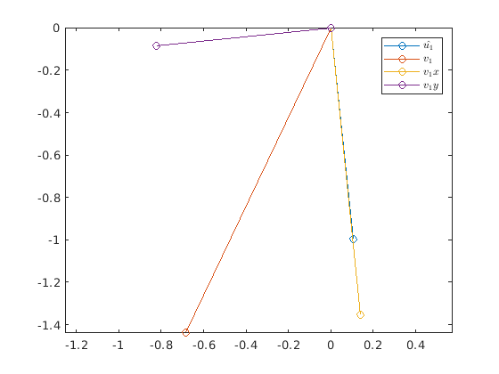

clear; close all; clc;
The components of vector v along the direction of u_hat and along the direction perpendicular to u_hat can be computed by running the inner_prod function (for more details, refer to the function).
Creating random vectors v1 and u1 using the randn:
v1 = randn(2, 1); u1 = randn(2, 1);
Since u1_hat is supposed to be a unit vector, we compute u1_hat by dividing u1 by the norm of itself
u1_hat = u1/norm(u1, 2);
Next we compute the v1_x, v1_y, and v1_perp_dist using the inner_prod function
[v1_x, v1_y, v1_perp_dist] = inner_prod(u1_hat, v1); plotv([u1_hat, v1, v1_x, v1_y], '-o') axis equal legend('$\hat{u_1}$', '$v_1$', '$v_1x$', '$v_1y$', 'interpreter', 'latex') %axis([-1, 2, -1, 2])
Let us begin by defining v2 and u2 in n = 4 dimensions.
v2 = rand(4, 1); u2 = rand(4, 1);
Normalizing u2 by its norm to create a unit vector u2_hat
u2_hat = u2 / norm(u2, 2);
Next we compute the v2_x, v2_y, and v2_perp_dist using the inner_prod function
[v2_x, v2_y, v2_perp_dist] = inner_prod(u2_hat, v2);
If v2_x lies in the same direction as u2_hat, then the cosine of the angle between the two vectors should be 1.
Because cos(theta) = u.v/||u||.||v||
And since |u2_hat| = 1
Therefore, cos(theta) = u2_hat.v2_x/||v2_x||
disp(['The cosine of angle between v2_x and u2_hat is ', num2str(v2_x'*u2_hat/norm(v2_x, 2))])
The cosine of angle between v2_x and u2_hat is 1
If v2_y is orthogonal to u2_hat, then the cosine of the angle between the two vectors should be 0.
disp(['The cosine of angle between v2_y and u2_hat is ', num2str(round(v2_y'*u2_hat/norm(v2_y, 2), 10))])
The cosine of angle between v2_y and u2_hat is 0
Checking for the sum of the vectors v2_x and v2_y to add to v2
v2_new = v2_x + v2_y; v2_new == v2
ans = 4×1 logical array 1 1 1 1
The sum of squared lengths of v2_x, v2_y, v2
v2_x_len_sq = sum(v2_x.^2); v2_y_len_sq = sum(v2_y.^2); v2_len_sq = sum(v2.^2);
Check if the identity holds
round(v2_len_sq - (v2_x_len_sq + v2_y_len_sq), 4) == 0
ans = logical 1
function [v_x, v_y, perp_dist] = inner_prod(u_hat, v) % Given a vector v and a unit vector u_hat, this function computes: % i) v_x which is the component of v along u_hat. This can be computed % by taking the dot product of the two vectors. % ii) v_y which is the component of v along a unit vector orthogonal to % u_hat. Let this projection be w. Since v_x + w = v, we can compute % w = v - v_x % iii) The distance of v from the component v_x that lies along u_hat is % basically the length of v_y, which can be computed as the norm of v_y v_x = u_hat'*v*u_hat; v_y = v - v_x; perp_dist = norm(v_y, 2); end